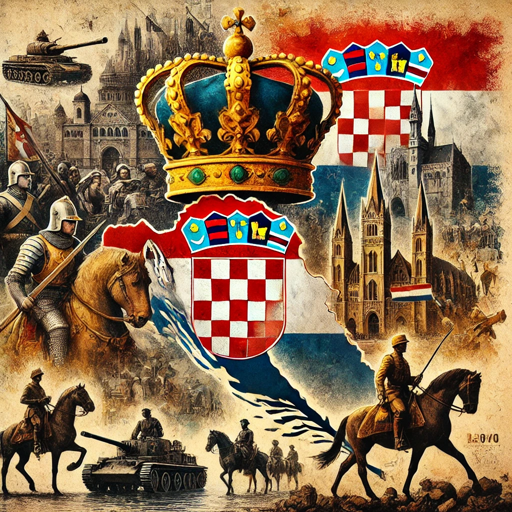

Contexto Histórico
Edad Media: En 1102, Croacia entró en una unión personal con Hungría, lo que generó tensiones políticas debido a la pérdida de autonomía y el control externo.
Imperio Austrohúngaro: Durante el siglo XIX, los croatas lucharon por mantener su identidad frente a las políticas centralizadoras del imperio.
Segunda Guerra Mundial: Croacia se convirtió en un estado independiente bajo el régimen Ustasha, lo que resultó en persecuciones étnicas y religiosas.
Guerra de Independencia (1991-1995): El conflicto surgió tras la declaración de independencia de Croacia, enfrentando a croatas contra fuerzas serbias y el ejército yugoslavo..
